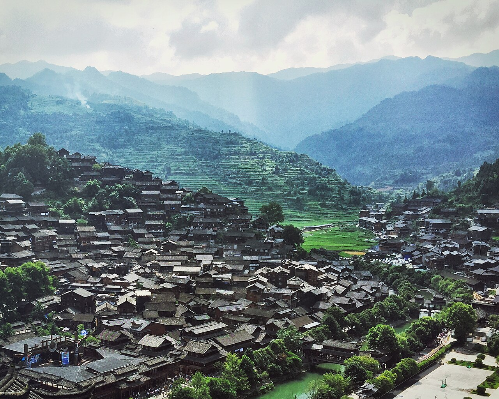

黔东南苗族侗族自治州集中了西江千户苗寨、肇兴侗寨、加榜梯田等顶级人文与自然景观。山路蜿蜒，但铺装整体良好，是体验西南少数民族文化的最佳自驾区域之一。
5–7 日经典：凯里—西江千户苗寨—朗德—雷山—肇兴侗寨—堂安侗寨—从江—加榜梯田—荔波（可选延伸）。西江夜景与侗族大歌是文化高光，加榜梯田季节性强。
4–10 月适宜，苗年、侗年及各类节日期间活动丰富但住宿紧张。尊重民族习俗，进寨需付门票与观光车费，无人机需询问规定。
Itinerary
分日行程
第 1 天
凯里 → 西江千户苗寨
下午进寨，逛吊脚楼群，傍晚观景台看千户灯火。长桌宴与酸汤鱼可选，尊重饮酒习俗。
第 2 天
西江 → 朗德 → 雷山
朗德上寨表演民俗（时间需查询），比西江更安静。向东南前往肇兴侗寨方向。
第 3 天
肇兴侗寨 → 堂安
肇兴五座鼓楼与侗族大歌，堂安侗寨徒步梯田（轻徒步 1–2 小时），看侗族生态博物馆式村落。
第 4 天
肇兴 → 从江 → 加榜梯田
从江岜沙苗寨（最后持枪部落，表演性质）可选。下午至加榜梯田，傍晚找观景台拍曲线。
第 5 天
加榜 → 凯里/返程
清晨再看梯田晨雾，经凯里返回贵阳或继续南下荔波（另 3 小时）。
Photo Essay
沿途影像




Highlights
核心景点
西江千户苗寨
世界最大苗族聚居村寨，吊脚楼沿山铺展，夜景灯火如星河。商业化程度高，但仍具震撼力。
肇兴侗寨
侗族鼓楼群与侗族大歌之乡，五座鼓楼代表仁义礼智信。比西江更安静，适合慢住。
加榜梯田
黔东南最上镜梯田之一，4–5 月灌水、9 月金黄。曲线随山势层叠，摄影者常凌晨占机位。
堂安侗寨
徒步肇兴—堂安步道，梯田与侗寨生活场景结合。轻徒步即可，适合亲子。
朗德上寨
比西江更小、更原生态的苗寨，民俗表演定时进行。适合对比商业化程度不同的苗乡体验。
Route
途经站点
1
凯里0
州府枢纽
高铁、机场中转。
2
西江40
千户苗寨
夜景不可错过。
3
肇兴200
侗寨核心
鼓楼与大歌。
4
加榜320
梯田
季节性强，4–5、9 月最佳。
Practical
实用信息
- 苗寨侗寨内多石板路，拉杆箱不便，建议背包入寨。
- 节日与周末住宿价格翻倍，提前预订。
- 尊重民族习俗，进火塘脱鞋，勿随意触摸神龛。
- 酸汤鱼、牛瘪等特色美食，肠胃敏感者适量尝试。
- 山区多雾，备除雾剂，弯多勿超车。
EV Tips
新能源出行提示
驾驶腾势 N7 等纯电 SUV 出发前，请特别注意以下事项：
- 凯里、西江、肇兴有快充，加榜等梯田区域补能有限，进山前满电。
- 黔东南山路连续爬坡，预留 25% 电量冗余。
- 部分侗寨仅慢充，规划时区分快充与目的地充电。